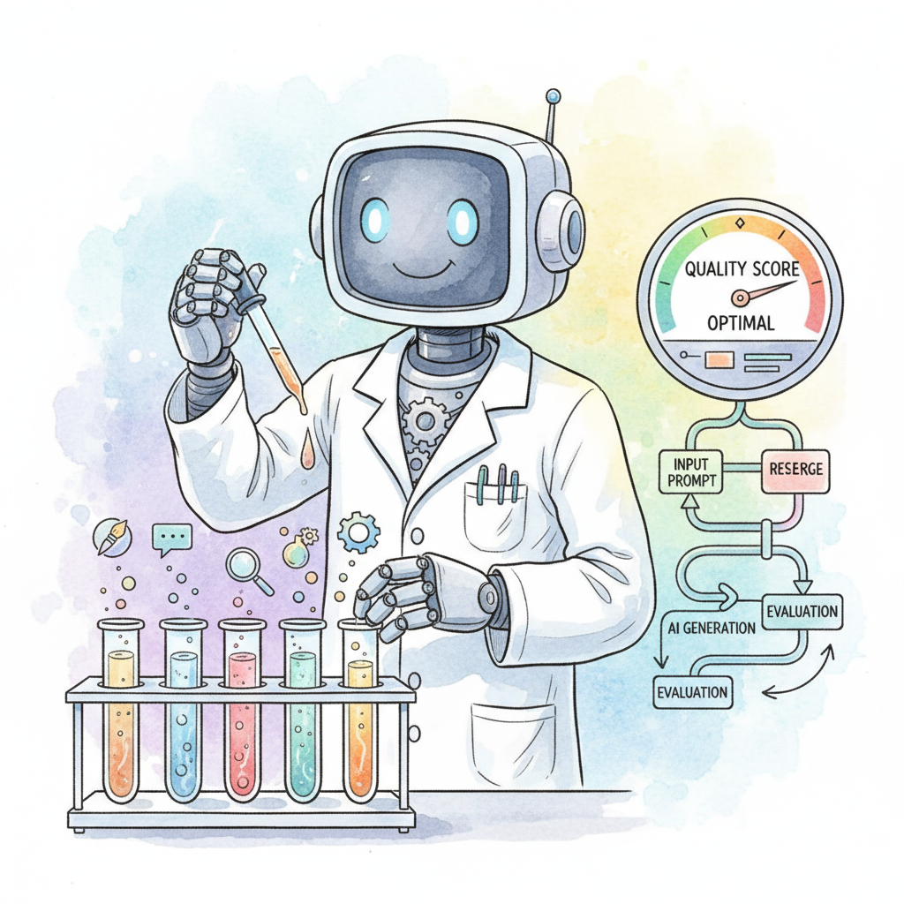

DSPy: Programmatic Prompt Optimization (Declarative Self-improving Language Programs) takes a fundamentally different approach to LLM programming. Instead of manually crafting prompts and hoping they generalize, DSPy: Programmatic Prompt Optimization treats prompts as learnable parameters that are optimized automatically against a metric. You declare what the LLM should do (via signatures like "question -> answer"), compose modules (ChainOfThought, ReAct, Retrieve), and then run an optimizer that discovers the best prompts, few-shot examples, and instructions for your specific task and model.
The framework, developed at Stanford NLP, introduces the concept of "compiling" LLM programs. Optimizers like BootstrapFewShot, MIPRO, and BayesianSignatureOptimizer search over prompt strategies using your training examples and evaluation metrics, producing optimized prompts that can be saved and reused. This makes LLM pipelines more reproducible, portable across models, and systematically improvable without manual prompt engineering.
This appendix is for developers and researchers who want to move beyond artisanal prompt writing toward systematic, metric-driven optimization. DSPy: Programmatic Prompt Optimization is particularly valuable when you need to adapt a pipeline to a new model, maintain quality across model updates, or maximize performance on a well-defined task with available evaluation data.
DSPy: Programmatic Prompt Optimization's approach to programmatic optimization contrasts with the manual techniques in Chapter 11 (Prompt Engineering); understanding both manual and automated approaches gives a complete picture. The evaluation and metrics system connects to Chapter 29 (Evaluation). For orchestration frameworks that use hand-written prompts, see Appendix L (LangChain); for a full ecosystem comparison, see Appendix V.
Read Chapter 11 (Prompt Engineering) first, as DSPy: Programmatic Prompt Optimization automates many of the techniques covered there (few-shot selection, chain-of-thought formatting, instruction tuning). You need basic Python proficiency and a conceptual understanding of optimization (what a metric is, what "training examples" means). No deep ML background is required, though familiarity with evaluation concepts from Chapter 29 helps when designing metrics.
Use DSPy: Programmatic Prompt Optimization when you have a well-defined task with evaluation data and want to maximize accuracy without hand-tuning prompts. It shines in classification, extraction, question answering, and multi-hop reasoning pipelines where you can measure success quantitatively. DSPy: Programmatic Prompt Optimization is also valuable when switching between models (e.g., GPT-4o to Claude to Llama), since the optimizer adapts prompts to each model's strengths. If you lack evaluation data, are prototyping a novel application, or need complex stateful workflows, start with manual prompt engineering (Chapter 11) or an orchestration framework (Appendix L) first.